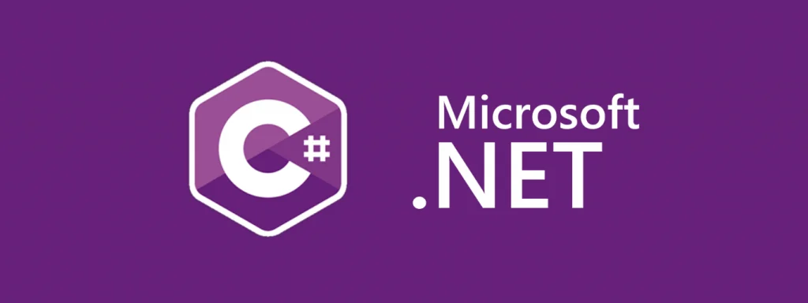
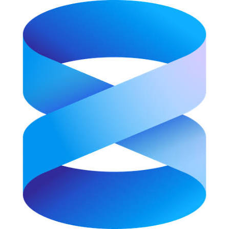
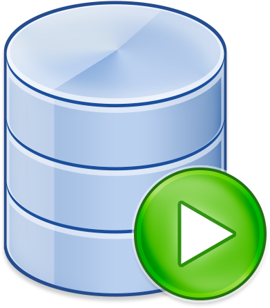

Work Term Report (Summer 2026)
Junior Analyst - DevOps Change Management
A New Experience
Following my previous co-op term as a Junior Analyst with CCS Enterprise Applications, I continued to build on the technical foundation I developed through my initial work with .NET and enterprise application development. While my earlier term focused heavily on learning new technologies and contributing to the early stages of the Flex Credit Allocation rewrite, this term involved taking ownership of larger projects, making architectural decisions, and delivering solutions that moved beyond proof-of-concept work into implementation and deployment.
HR Systems Work
Flex Allocation Rewrite
The Flex Credit Allocation rewrite remained one of my primary responsibilities throughout the term.
During my previous work term, I focused on learning .NET, designing a modern replacement for the application's user interface, and building the initial Blazor Server frontend. This term expanded on that work by moving deeper into application architecture and data integration planning.
I continued developing the modern Blazor Server version of the application while maintaining compatibility with the existing business rules and workflows used by HR administrators. Rather than simply recreating the legacy system, I evaluated how modern .NET practices could be introduced in a low-risk manner that would support future maintenance and migration efforts.
Key areas of work included:
- Expanding and refining administrative functionality.
- Designing approaches for managing allocation data and employee information.
- Implementing and validating business rules carried forward from the legacy application.
- Creating data-access architecture that would allow the application to transition from mock data to real data sources.
- Integrating Entity Framework Core in a controlled, database-safe manner.
- Developing read-only access patterns to support application functionality while preventing unintended database modifications.
- Working through authentication, authorization, and future backend integration considerations.
- Creating documentation, demonstrations, and design artifacts to support stakeholder communication.
A major focus was ensuring that development decisions supported long-term modernization goals while remaining practical for a large enterprise application with an existing user base and operational requirements.

Stakeholder Collaboration
Throughout the project I worked closely with HR stakeholders, supervisors, and technical staff to gather requirements, present progress, receive feedback, and adjust implementation plans. This included preparing demonstrations, discussing future functionality, and balancing technical considerations with user needs.
The project strengthened my ability to translate business requirements into technical solutions while keeping maintainability and future development in mind.
Finance Systems Work
ECS Archive Project
A significant project this term involved the migration and archival of financial data from an Oracle-based ECS system into Microsoft SQL Server.
The project required transferring two related datasets containing expense claim information while preserving data integrity and maintaining relationships between records.
My responsibilities included:
- Investigating source and destination database structures.
- Developing and refining the migration approach.
- Creating SQL Server schema definitions and migration scripts.
- Documenting migration procedures.
- Validating data quality throughout the migration process.
- Testing and refining the process across multiple environments.
During early testing, I identified potential issues related to direct data imports and designed a staging-table approach that allowed data to be imported as text prior to conversion into final SQL Server data types. This significantly reduced the risk of incorrect data conversions and provided additional opportunities for validation before loading production data.
The migration process ultimately included:
- Oracle data exports
- SQL Server staging imports
- Validation checks
- Final data loads
- Index creation
- Foreign key implementation
- Post-migration verification
After the process was successfully validated in Development and Test environments, the same approach was prepared and executed for Production. This project provided valuable experience working with large datasets, database migration planning, SQL Server administration tasks, and data quality validation in an enterprise environment.


Speedata Publisher Migration
Building on my previous work with Speedata Publisher, I continued supporting the organization's migration from an older version of the software to a modern release.
My earlier work focused on report compatibility analysis and template updates. As the migration progressed, I expanded my understanding of the platform and gained
further experience working with publishing templates, migration challenges, and version-specific behaviour.
The project reinforced the importance of documentation, testing, and attention to detail when upgrading systems that support important operational processes.
Technical Growth
This term marked a transition from primarily learning technologies to applying them independently. Areas where my knowledge grew significantly included:
- Modern .NET application development
- Blazor Server
- Entity Framework Core
- Database architecture
- SQL Server
- Oracle-to-SQL Server migration strategies
- Enterprise application modernization
- System integration planning
- Technical documentation
- Software architecture decision-making
I became increasingly comfortable working with unfamiliar technologies, evaluating multiple implementation approaches, and selecting solutions based on long-term maintainability rather than solely immediate functionality.
Professional Growth
One of the biggest changes from previous work terms was the level of ownership I was given. Rather than working exclusively on assigned development tasks, I frequently found myself:
- Investigating technical problems independently.
- Researching potential solutions.
- Presenting recommendations.
- Creating implementation plans.
- Documenting processes for future teams.
- Supporting projects through deployment and validation phases.
I gained confidence in making technical decisions, communicating complex ideas to both technical and non-technical audiences, and managing projects that spanned multiple months and departments.

Reflection
This term represented a significant step forward in my development as a software developer and analyst. The work
moved beyond learning individual technologies and toward understanding how
enterprise systems are planned, modernized, migrated, and maintained over time.
Through the Flex Credit Allocation rewrite, ECS Archive migration, and Speedata Publisher migration efforts, I gained practical experience across application development, database systems, software architecture, stakeholder collaboration, and technical documentation. More importantly, I developed greater confidence in my ability to independently tackle unfamiliar challenges, design sustainable solutions, and contribute meaningfully to large institutional projects.